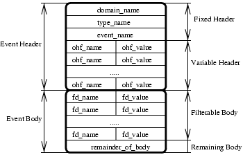

5 Filters and the Constraint Language BNF
5.1 Filters and the Constraint Language BNF
This chapter describes, the grammar supported by CosNotifyFilter_Filter and CosNotifyFilter_MappingFilter, and how to create and use filter objects.
How to create filter objects
To be able to filter events we must create a filter and associate it with one, or more, of the administrative or proxy objects. In the example below, we choose to associate the filter with a ConsumerAdmin object.
FilterFactory = cosNotificationApp:start_filter_factory(),
Filter = 'CosNotifyFilter_FilterFactory':
create_filter(FilterFactory,"EXTENDED_TCL"),
ConstraintInfoSeq = 'CosNotifyFilter_Filter':
add_constraints(Filter, ConstraintExpSeq),
FilterID = 'CosNotifyChannelAdmin_ConsumerAdmin':
add_filter(AdminConsumer, Filter),
"EXTENDED_TCL" is the only grammar supported by Orber Notification Service.
Depending on which operation type the Admin object uses, i.e., 'AND_OP' or 'OR_OP', events will be tested using the associated filter. The operation properties are:
-
'AND_OP' - must be approved by the proxy's and its parent admin's filters. If all filters associated with an object (Admin or Proxy) return false the event will be discarded. In this situation it is pointless to try and verify with the other object's associated filters since the outcome still would be the same.
-
'OR_OP' - if one of the object's (Admin or Proxy) filters return true, the event will not be checked against any other filter associated with a proxy or its parent admin. If a object's associated filters all return false, the event will be forwarded to related proxies/admins, and tested against any associated filters.
Initially, filters are empty and will always return true. Hence, we must add constraints by using 'CosNotifyFilter_Filter':add_constraints/2. As input, the second argument must be a sequence of:
#'CosNotifyFilter_ConstraintExp'{
event_types = [#'CosNotification_EventType'{
domain_name = string(),
type_name = string()}],
constraint_expr = string()}
The event_types describes which types of events that should be matched using the associated constraint_expr.
If a constraint expression is supposed to apply for all events, then the type_name can be set to the special event type %ALL in a constraint's event type sequence. The domain_name should be "" or "*".
In the following sections we will take a closer look on how to write constraint expressions.
The CosNotification Constraint Language
The constraint language supported by the Notification Service is:
<constraint> := /* empty */
| <bool>
<bool> := <bool_or>
<bool_or> := <bool_or> or <bool_and>
| <bool_and>
<bool_and> := <bool_and> and <bool_compare>
| <bool_compare>
<bool_compare> := <expr_in> == <expr_in>
| <expr_in> != <expr_in>
| <expr_in> < <expr_in>
| <expr_in> <= <expr_in>
| <expr_in> > <expr_in>
| <expr_in> >= <expr_in>
| <expr_in>
<expr_in> := <expr_twiddle> in <Ident> /* sequence only */
| <expr_twiddle>
| <expr_twiddle> in $ <Component> /* sequence only */
<expr_twiddle> := <expr> ~ <expr> /* string data types only */
| <expr>
<expr> := <expr> + <term>
| <expr> - <term>
| <term>
<term> := <term> * <factor_not>
| <term> / <factor_not>
| <factor_not>
<factor_not> := not <factor>
| <factor>
<factor> := ( <bool_or> )
| exist <Ident>
| <Ident>
| <Number>
| - <Number>
| <String>
| TRUE
| FALSE
| + <Number>
| exist $ <Component>
| $ <Component>
| default $ <Component> /* discriminated unions only */
<Component> := /* empty */
| . <CompDot>
| <CompArray>
| <CompAssoc>
| <Ident> <CompExt> /* run-time variable */
<CompExt> := /* empty */
| . <CompDot>
| <CompArray>
| <CompAssoc>
<CompDot> := <Ident> <CompExt>
| <CompPos>
| <UnionPos>
| _length /* only valid for arrays or sequences */
| _d /* discriminated unions only */
| _type_id /* only valid if possible to obtain */
| _repos_id /* only valid if possible to obtain */
<CompArray> := [ <Digits> ] <CompExt>
<CompAssoc> := ( <Ident> ) <CompExt>
<CompPos> := <Digits> <CompExt>
<UnionPos> := ( <UnionVal> ) <CompExt>
<UnionVal> := /* empty */
| <Digits>
| - <Digits>
| + <Digits>
| <String>
/* Character set issues */
<Ident> :=<Leader> <FollowSeq>
| \ < Leader> <FollowSeq>
<FollowSeq> := /* <empty> */
| <FollowSeq> <Follow>
<Number> := <Mantissa>
| <Mantissa> <Exponent>
<Mantissa> := <Digits>
| <Digits> .
| . <Digits>
| <Digits> . <Digits>
<Exponent> := <Exp> <Sign> <Digits>
<Sign> := +
| -
<Exp> := E
| e
<Digits> := <Digits> <Digit>
| <Digit>
<String> := ' <TextChars> '
<TextChars> := /* <empty> */
| <TextChars> <TextChar>
<TextChar> := <Alpha>
| <Digit>
| <Other>
| <Special>
<Special> := \\
| \'
<Leader> := <Alpha>
<Follow> := <Alpha>
| <Digit>
| _
<Alpha> is the set of alphabetic characters [A-Za-z]
<Digit> is the set of digits [0-9]
<Other> is the set of ASCII characters that are not <Alpha>, <Digit>, or <Special>
In the absence of parentheses, the following precedence relations hold :
- (), exist, default, unary-sign
- not
- *, /
- +, -
- ~
- in
- ==, !=, <, <=, >, >=
- and
- or
The Constraint Language Data Types
The Notification Service Constraint Language, defines how to write constraint expressions, which can be used to filter events. The representation does, however, differ slightly from ordinary Erlang terms.
When creating a ConstraintExp, the field constraint_expr must be set to contain a string, e.g., "1 < 2". The Notification Service Constraint Language, is designed to be able to filter structured and unstructured events using the same constraint expression. The Constraint Language Types and Operations can be divided into two sub-groups:
-
Basic - arithmetics, strings, constants, numbers etc.
-
Complex - accessing members of complex data types, such as unions.
Some of the basic types, e.g., integer, are self explanatory. Hence, they are not described further.
| Type/Operation | Examples | Description |
| string | "'MyString'" | Strings are represented as a sequence of zero or more <TextChar>s enclosed in single quotes, e.g., 'string'. |
| ~ | "'Sring1' ~ 'String2'" | The operator ~is called the substring operator and mean "String1 is contained within String2". |
| boolean | "TRUE == (('lang' ~ 'Erlang' + 'fun' ~ 'functional') >= 2)" | Booleans may only be TRUE or FALSE, i.e., only capital letters. Expressions which evaluate to TRUE or FALSE can be summed up and matched, where TRUE equals 1 and FALSE 0. |
| sequence | "myIntegerSequence[2]" | The BNF use C/C++ notation, i.e., the example will return the thirdelement. |
| _length | "myIntegerSequence._length" | Returns the length of an sequence or array. |
| in | "'Erlang' in $.FunctionalLanguagesStringSeq" | Returns TRUEif a given element is found in the given sequence. The element must be of a simple type and the same as the sequence is defined to contain. |
| $ | "$ == 40" | Denote the current event as well as any run-time variables. If the event is unstructured and its contained value 40, the example will return TRUE. |
| . | "$.MyStructMember == 40" | The structure member operator .may be used to reference its members when the data refers to a named structure, discriminated union, or CORBA::Any data structure. |
| _type_id | "$._type_id == 'MyStruct'" | Returns the unscoped IDL type name of the component. This operation is only valid if said information can be obtained. |
| _repos_id | "$._repos_id == 'IDL:MyModule/MyStruct:1.0'" | Returns the RepositoryId of the component. This operation is only valid if said information can be obtained. |
| _d | "$.eventUnion._d" | May only be used when accessing discriminated unions and refers to the discriminator. |
| exist | "exist $.eventUnion._d and $.eventUnion._d == 10" | To avoid that a filtering of an event fails due to that, for example, we try to compare a union discriminator which does not exist, we can use this operator. |
| default | "default $.eventUnion._d" | If the _doperation is in conjunction with the defaultoperation, TRUE will be returned if the union has a default member that is active. |
| union | "$.(0) == 5"eq. "$.('zero') == 5" | When the component refers to a union, with one of the cases defined as case 0: short zero;, we use 0or 'zero'. The result of the example is TRUEif the union has a discriminator set to 0and the value 5. If more than one case is defined to be'zero', $.('zero')accepts both; $.(0)only returns TRUEif the discriminator is set to 0. Leaving out the identifier, i.e., $.(), refers to the default value. |
| name-value pairs | "$.NameValueSeq('myID') == 5"eq."$.NameValueSeq[1].name == 'myID' and $.NameValueSeq[1].value == 5" | The Notification service makes extensive use of name-value pairssequences within structured events, which allow us to via the identifier nameaccess its value, as shown in the example. |
In the next section we will take a closer look at how it is possible to write constraints using different types of notation etc.
Accessing Data In Events
To filter events, the supplied constraints must describe the contents of the events and desired values. We can, for example, state that we are only interested in receiving events which are of type CommunicationsAlarm. To be able to achieve this, the constraint must contain information that points out which fields to compare with. Figure one illustrates a conceptual overview of a structured event. The exact definition is found in the CosNotification.idl file.
Figure 5.1: Figure 1: The structure of a structured event.
The Notification Service supports different constraint expressions notation:
-
Fully scoped, e.g., "$.header.fixed_header.event_type.type_name == 'CommunicationsAlarm'"
-
Short hand, e.g., "$type_name == 'CommunicationsAlarm'"
-
Positional Notation, e.g., "$.0.0.0.1 == 'CommunicationsAlarm'"
Which notation to use is up to the user, however, the fully scoped may be easier to understand, but in some cases, if received from an ORB that do not populate ID:s of named parts, the positional notation is the only option.
If a constraint, which access fields in a structured event structure, is supposed to handle unstructured events as well, the CORBA::Any must contain the same type of members.
How to filter against the fixed header fields, is described in the table below.
| Field | Fully Scoped Constraint | Short Hand Constraint |
| type_name | "$.header.fixed_header.event_type.type_name == 'Type'" | "$type_name == 'Type'" |
| domain_name | "$.header.fixed_header.event_type.domain_name == 'Domain'" | "$domain_name == 'Domain'" |
| event_name | "$.header.fixed_header.event_name == 'Event'" | "$event_name == 'Event'" |
If we are only interested in receiving events regarding 'Domain', 'Event' and 'Type', the constraint can look like "$domain_name == 'Domain' and $event_name == 'Event' and $type_name == 'Type'".
The variable event header consists of a sequence of name-value pairs. One way to filter on these are to use a constraint that looks like "($.header.variable_header[1].name == 'priority' and $.header.variable_header[1].value > 0)". An easier way to accomplish the same result is to use a constraint that treats the name-value pair as an associative array, i.e., when given a name the corresponding value is returned. Hence, instead we can use "$.header.variable_header(priority) > 0".
Accessing the event body is done in the same way as for the event header fields. The user must, however, be aware of, that if a run-time variable ($variable) is used data in the event header may take precedence. The order of precedence is:
- Reserved, e.g., $curtime
- A simple-typed member of $.header.fixed_header.
- Properties in $.header.variable_header.
- Properties in $.filterable_data.
- If no match is found it is translated to $.variable.
Mapping Filters
Mapping Filters may only be associated with Consumer Administrators or Proxy Suppliers. The purpose of a Mapping Filter is to override Quality of Service settings.
Initially, Mapping Filters are empty and will always return true. Hence, we must add constraints by using 'CosNotifyFilter_MappingFilter':add_mapping_constraints/2. If a constraint matches, the associated value will be used instead of the related Quality of Service system settings.
As input, the second argument must be a sequence of:
#'CosNotifyFilter_MappingConstraintPair'{
constraint_expression = #'CosNotifyFilter_ConstraintExp'{
event_types = [#'CosNotification_EventType'{
domain_name = string(),
type_name = string()}],
constraint_expr = string()},
result_to_set = any()}